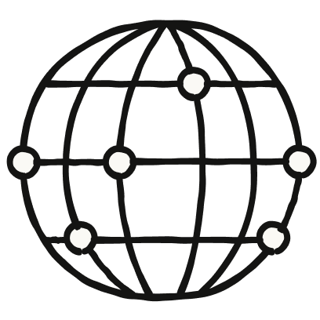

<!DOCTYPE html>
<html>
<head>
<meta charset="utf-8">
<title>CCNYC event flyer (official Claude Community kit)</title>
<style>
  @font-face {
    font-family: "AnthropicSerif";
    src: url("../../claude-community-brand/assets/fonts/AnthropicSerifDisplay-Light-Static.otf") format("opentype");
    font-weight: 300;
  }
  @font-face {
    font-family: "AnthropicSans";
    src: url("../../claude-community-brand/assets/fonts/AnthropicSansDisplay-Semibold-Static.otf") format("opentype");
    font-weight: 600;
  }
  :root { --clay: #D97757; --ink: #141413; --ivory: #FAF9F5; }
  * { margin: 0; padding: 0; box-sizing: border-box; }
  html, body { width: 100%; height: 100%; overflow: hidden; }
  body { background: var(--clay); font-family: "AnthropicSans", sans-serif; color: var(--ivory); position: relative; }
  img { position: absolute; }
  .serif { font-family: "AnthropicSerif", Georgia, serif; color: var(--ink); letter-spacing: -0.01em; }
  .center { position: absolute; width: 100%; text-align: center; }
</style>
</head>
<body>
<script>
  // Mirrors the official Signage-Eventposter proportions: arch ~17% down,
  // icon nested in the arch hollow, city serif ~46%, label ~64%, date ~70%.
  const q = new URLSearchParams(location.search);
  const W = parseInt(q.get("w") || "2200");
  const H = parseInt(q.get("h") || "3400");
  document.body.style.width = W + "px";
  document.body.style.height = H + "px";

  const city = q.get("city") || "New York";
  const label = q.get("label") || "MEETUP";
  const date = q.get("date") || "";
  const url = q.get("url") || "";
  const icon = q.get("icon") || "meetup";
  const qr = q.get("qr") || ""; // relative path to a QR image

  const u = W / 1080;
  // Poster (tall) vs social (squarish) vs banner (very tall, e.g. 33.5x80in
  // retractable) proportions, all mirroring the kit.
  // Vertical rhythm tuned so the gaps between blocks read evenly.
  const squarish = H / W < 1.2;
  const banner = H / W >= 2;
  const P = banner
    ? { archTop: 0.105, archW: 880, iconH: 687, city: 0.475, label: 0.55, date: 0.62, qrTop: 0.68, qrSize: 200 }
    : squarish
    ? { archTop: 0.07, archW: 780, iconH: 200, city: 0.475, label: 0.645, date: 0.722, qrTop: 0.792, qrSize: 115 }
    : { archTop: 0.135, archW: 760, iconH: 210, city: 0.415, label: 0.585, date: 0.65, qrTop: 0.73, qrSize: 225 };
  const archW = u * P.archW;
  const archH = archW * (785 / 2048);
  const archTop = H * P.archTop;
  const iconH = u * P.iconH;
  const iconTop = archTop + archH * (banner ? 0.33 : squarish ? 0.44 : 0.52);
  // Banner mirrors the official "Welcome <City>" banner: ivory spark on top,
  // arch text hugging a large globe (like the Berlin door banner).
  const sparkW = u * 105;
  const sparkTop = H * 0.038;
  const bannerSpark = banner
    ? ``
    : "";
  // The arch icon may be one of the kit SVGs or the community globe PNG —
  // "globe" reproduces the official community-square lockup (arch over globe).
  const iconSrc = icon === "globe"
    ? "../../claude-community-brand/assets/brand/globe.png"
    : `../../claude-community-brand/assets/icons/${icon}.svg`;
  // Optional second icon rendered below the label (e.g. the coffee mug under
  // "CLAUDE & COFFEE" on banners).
  const labelIcon = q.get("labelIcon") || "";
  const labelIconH = u * 220;
  // Banner gets the kit's half globe rising from the bottom edge, like the
  // NYC square, so the tall lower field doesn't read as empty.
  const globeW = u * (banner ? 1000 : squarish ? 760 : 820);
  const globeCrop = banner ? 0.45 : 0.42; // visible fraction of the globe
  // Show only the top ~45% of the globe, cropped at the bottom edge — the kit
  // always renders it as a half globe rising from the edge. For retractable
  // banners, `cassette` is the fraction of height swallowed by the roll-up
  // cassette; the globe crops at that line and the clay bleeds through it.
  const cassette = parseFloat(q.get("cassette") || "0");
  // bottomGlobe=1 opts any layout into the half globe rising from the bottom
  // edge (the nyc-square look) — used for evergreen images with no date/QR.
  const wantsGlobe = (banner || q.get("bottomGlobe") === "1") && icon !== "globe";
  const globe = wantsGlobe
    ? ``
    : "";

  const qrSize = u * P.qrSize;
  const qrTop = H * P.qrTop;
  document.body.innerHTML = `
    ${bannerSpark}
    
    
    <div class="serif center" style="top:${H * P.city}px;font-size:${u * (squarish ? 140 : 155)}px;line-height:1">${city}</div>
    <div id="lbl" class="center" style="top:${H * P.label}px;font-size:${u * (squarish ? 56 : 62)}px;letter-spacing:0.22em">${label}</div>
    ${labelIcon ? `` : ""}
    <div class="center" style="top:${H * P.date}px;font-size:${u * 44}px">${date}</div>
    ${qr ? `` : ""}
    ${url ? `<div class="center" style="top:${qr ? qrTop + qrSize + u * 22 : H * 0.9}px;font-size:${u * 30}px;opacity:0.9">${url}</div>` : ""}
    ${globe}`;

  // The vertical rhythm above assumes a one-line label. A wrapped label (either
  // an explicit <br> or a long line the browser breaks itself) grows downward
  // into the half globe — on squarish artboards it lands right on top of it.
  // Measure the label after layout and, if the globe would collide, shrink it
  // so it still rises from the bottom edge but clears the text. Single-line
  // labels measure clear already, so nothing moves for the existing artboards.
  const lbl = document.getElementById("lbl");
  const globeEl = document.getElementById("globe");
  if (lbl && globeEl) {
    const floor = H * (1 - cassette);
    const clearance = lbl.getBoundingClientRect().bottom + u * 40;
    if (floor - globeW * globeCrop < clearance) {
      const fitted = Math.max((floor - clearance) / globeCrop, globeW * 0.45);
      globeEl.style.width = `${fitted}px`;
      globeEl.style.left = `${(W - fitted) / 2}px`;
      globeEl.style.top = `${floor - fitted * globeCrop}px`;
    }
  }
</script>
</body>
</html>
